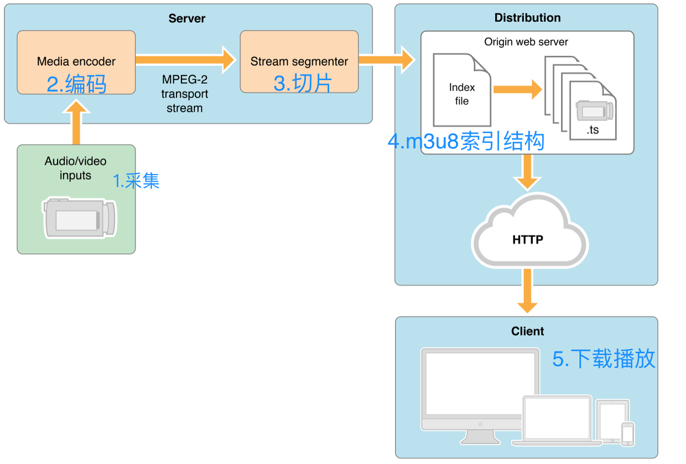

流媒体协议
常见的流媒体协议
- 常见的流媒体协议有很多比如:
- RTP(Real-time Transport Protocol), 常用语电话会议, 网络电话等场景, 但是缺点是不提供网络保障
- RTCP(Real-time Transport Control Protocol), 是实时传输协议（RTP）的一个姐妹协议, 也常用于语电话会议, 网络电话等场景.
- RTMP(Real Time Streaming Protocol), RTMP是Adobe开发的协议
- HLS(HTTP Live Streaming)是苹果公司(Apple Inc.)实现的基于HTTP的流媒体传输协议，可实现流媒体的直播和点播
HLS(HTTP Live Streaming)
- HTTP Live Streaming（HLS）是苹果公司实现的基于HTTP的流媒体传输协议，可实现流媒体的直播和点播。原理上是将视频流分片成一系列HTTP下载文件。所以，HLS比RTMP有较高的延迟。HLS基于HTTP协议实现，传输内容包括两部分，一是M3U8描述文件，二是TS媒体文件
- 相对于常见的流媒体直播协议，例如RTMP协议、RTSP协议、MMS协议等，HLS直播最大的不同在于，直播客户端获取到的，并不是一个完整的数据流。HLS协议在服务器端将直播数据流存储为连续的、很短时长的媒体文件（MPEG-TS格式），而客户端则不断的下载并播放这些小文件，因为服务器端总是会将最新的直播数据生成新的小文件，这样客户端只要不停的按顺序播放从服务器获取到的文件，就实现了直播。
- 由此可见，基本上可以认为，HLS是以点播的技术方式来实现直播。
- 工作流程为:
- 采集视频源和音频源的数据
- 对原始数据进行H264编码和AAC编码
- 视频和音频数据封装为MPEG-TS包
- HLS分段生成策略及m3u8索引文件
- HTTP传输协议传输数据
- 使用FFmpeg命令将mp4文件切换成m3u8&ts切片
// 安装Homebrew
ruby -e "$(curl -fsSL https://raw.githubusercontent.com/Homebrew/install/master/install)"
// 安装FFmpeg
brew install ffmpeg
// 执行转换命令
ffmpeg -i XXX.mp4 -c:v libx264 -c:a copy -f hls XXX.m3u8
RTMP
- RTMP协议是 Adobe 公司开发的一个基于TCP的应用层协议，Adobe 公司也公布了关于RTMP的规范
- RTMP本质上是流协议，主要的优势是：
- 实时性高：RTMP的实时性在3秒之内，经过多层CDN节点分发后，实时性也在3秒左右,在一些实时性有要求的应用中以RTMP为主。
- 支持加密：RTMPE和RTMPS为加密协议
- 稳定性高：HTTP也很稳定，但HTTP是在协议上稳定稳定性不只是服务端的事情，在CDN分发，服务器管理，客户端的支持上
- RTMP的使用
- RTMP协议也要客户端和服务器通过“握手”来建立基于传输层链接之上的RTMP Connection链接，在Connection链接上会传输一些控制信息
- TMP协议传输时会对数据做自己的格式化，这种格式的消息我们称之为RTMP Message
- 而实际传输的时候为了更好地实现多路复用、分包和信息的公平性，发送端会把Message划分为带有Message ID的Chunk，每个Chunk可能是一个单独的Message，也可能是Message的一部分，在接受端会根据chunk中包含的data的长度，message id和message的长度把chunk还原成完整的Message，从而实现信息的收发。